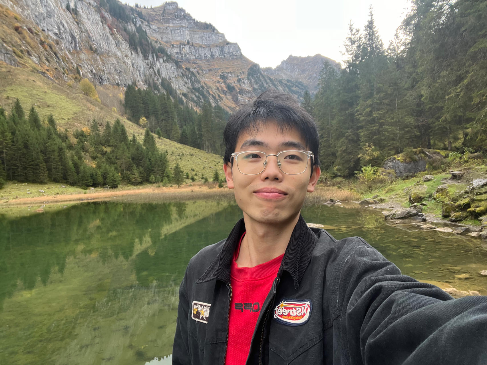

Hello, I'm Yixin Chen
I'm currently pursuing an M.Sc. in Physics of Life at the Biozentrum, University of Basel, where I develop biologically plausible learning algorithms to investigate how the brain encodes spatial information and how spatial memories form in the hippocampus. I enjoy combining theoretical modeling, simulations, and data analysis to unravel the mechanisms underlying neural computation. The emergence of intelligence from patterns of neural activity truly fascinates me. In addition to my work on brain-inspired algorithms, I collaborated on reinforcement-learning projects and explored large-language-model research—experiences that have deepened my appreciation for advanced AI and inspired me to continue in academia.
Recent Activities
- 4th Feb 2025 – Gave a talk at the Swiss Computational Neuroscience Retreat on grid cell formation from place cell spatial information input.
- 1st Feb 2025 – Began a remote research internship on brain-inspired learning rules in linear attention mechanisms at the Automation Institute (CAS), Beijing, China.
- 18th Oct 2024 – Started a research project on spatial memory formation in spiking neural networks at the Biozentrum, University of Basel, Switzerland.
- 18th Sept 2024 – Began my master’s program in Physics of Life at the University of Basel.
- 1st June 2024 – Began a remote research internship in evolutionary computation and reinforcement learning at the University of Birmingham, UK.
Education
- 2023–2026 (expected) M.Sc. in Physics of Life, University of Basel, Switzerland
- 2023 B.Sc. in Physics, Jilin University (Project 985), Changchun, China
- 2023 B.Sc. in Physics, Tomsk Polytechnic University, Tomsk, Russia
Research Experience
Dec 2023–Jul 2024
Research Assistant, Large-Field-of-View Light-Field Microscopy
Biomedical Photonics Lab, Tsinghua University
- Developed computational imaging pipelines for extended FOV light-field microscopy.
- Implemented 3D reconstruction algorithms and optimized MATLAB scripts for large volumetric datasets.
- Collaborated with experimentalists to validate models against real microscopy data.
june 2021–Jul 2022
Research Assistant, Second Harmonic Generation in Graphene
CIOMP, Chinese Academy of Sciences, Changchun, China
- Co-first author on publication "Study on the second harmonic generation mechanism in few-layer graphene"
- Performed first-principles calculations of electronic structure in bilayer and trilayer graphene.
- Analyzed band structures, first- and second-order conductivities, and polarization parameters.
- Developed MATLAB code to process and visualize nonlinear optical response data.